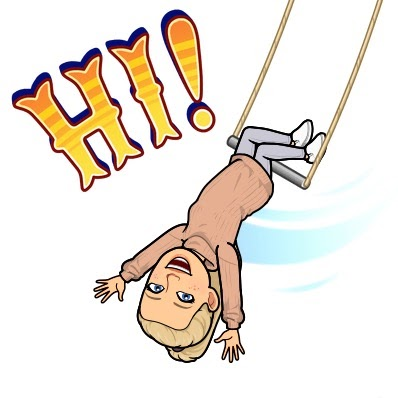

We sell scrunchies in packs of 3- but with a twist! These scrunchies come with a positive message and intention behind them. There are 4 different packs- a red/love pack, a yellow/hope pack, a green/tranquility pack, and a blue/faith pack. If you buy a faith pack, you’ll have faith in yourself, situations, and others when you wear it! Same goes for all the other packs, except aligning with whatever the scrunchie pack is. Each pack comes with one intention note that will either be a quote, definition, or a few words from our team! We hope you consider buying our product, and you can get the link by going to the “Buy” section on our website.
Agachi Scrunchies didn’t start off as Agachi Scrunchies. First, we actually sold wall hanging decorations when Entre first started! After we got feedback and had experimented with making this product, we decided to veto it. We didn’t enjoy making it and we just didn’t like it. After that, we went through a few more ideas, and decided that it would be a great idea to make scrunchies to spread positivity! The scrunchies were stylish & it came with a unique twist: a positive message and intent when you wear it- as well as a note that goes into more detail about the intention scrunchie! Everytime you would wear the scrunchie that was associated with the word, you would feel that positive feeling. So, we got all the fabrics and other materials we needed to make the scrunchies. Although the scrunchies were cute, they weren't as good as they could be. Now, our scrunchies have improved intention notes and way more stylish fabric! That is how we came to be.
|
 Alice |
Grace |
Inari |
Claudia |
Agachi Scrunchies consists of 4 members! Alice, Grace, Inari, and Claudia. We all work super well together and put so much effort into our company! Even though we do things together, we also work on our company separately and contribute different things to our company. Alice makes most of our product and is GREAT at it! She handles all things product related, and does it very well! Grace is our computer scientist and codes our website! She made what you are seeing right now, this beautiful website. Grace also edited our product video that will be included in our slide presentation on Entre Night. Inari focuses her time on the Entre slides for Entre Night, making content to be put on the website, and organizing information! Claudia works with our finances and makes sure that we don’t spend too much money or make irresponsible decisions with how we make our money. She also contributes to other things, like the Entre slides. Agachi Scrunchies has wonderful team members who each have their own strengths to make this company run wonderfully!